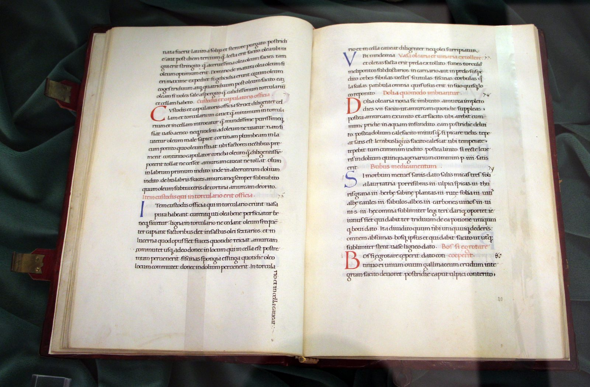

Unit 6 · Slavery in ancient Rome · Lesson 15
Bringing it together: checkpoint, annotated exemplar and checklist
What do you know across all six dot points, what does each directive verb ask of you, and how does a strong response end?
Year 11 Ancient History · Present with → or space · Read on a phone with R

Connect · 3 minutes · books closed · everyone writes · press K, click 3
One sentence, two interpretations of Spartacus
Write one sentence that weighs two interpretations of the revolt of Spartacus: say who holds each, and which the evidence better supports.
Frame: “[Historian] argues …, whereas …; [the ancient evidence] better supports …, because …”
- It gives two interpretations and says whose each is: a historian, named, in the present tense.
- It weighs them against ancient evidence from Plutarch or Appian, named.
- It judges: it says which the evidence better supports, and why.
- It keeps the historian’s own words exact, and says ‘enslaved people’ outside a quotation.
Bradley (1989) reports that some historians have portrayed Spartacus as ‘a revolutionary hero of the historical class struggle’, but argues himself that the slave wars ‘were not revolutionary mass movements in any sense’; the reports of Plutarch and Appian that Spartacus first made for the Alps, not for Rome, better support Bradley, because they suggest a leader trying to leave Italy, not to remake Roman society.
Checkpoint · books closed · 5 minutes · press K, click 5, then Start · answer in full sentences
Twelve questions, two on each dot point
dot points 1–2 · sources, origins and extentdot points 3–4 · who, and attitudes and statusdot point 5 · treatment and the economydot point 6 · significant events
- dot point 1Who wrote almost every surviving text about Roman slavery, and where do enslaved people’s own voices come closest to being heard?
- dot point 1State Cato’s purpose in On Agriculture 2.7 and Seneca’s in Letter 47.
- dot point 2Name two ways, other than war, in which people became enslaved. Give a source for each.
- dot point 2What did Hopkins and Scheidel each estimate for Italy, and why do their figures differ?
- dot point 3In Cato’s staff list for a 240-iugera olive estate (10.1), how many people are listed, which woman appears, and who is missing?
- dot point 3What does Diodorus 5.38.1 say about the enslaved miners of Spain, and why is it not a miner’s own voice?
- dot point 4What power did Gaius say owners had (Institutes 1.52), and what did Antoninus Pius limit?
- dot point 4Whose scheme is Varro 1.17.1, which sets enslaved people beside cattle and vehicles, and what does it not show?
- dot point 5What food and clothing does Cato set (56 and 59), and what does the text not say about the bread?
- dot point 5What do Varro 1.17.2–3 and Columella 1.7.6 say about free workers on farms, and whose opinion is it?
- dot point 6When did the First Sicilian slave war end, and when did it begin? How sure are we of each?
- dot point 6Name two ways Plutarch’s and Appian’s accounts of the revolt of Spartacus differ, and say when each wrote.
Checkpoint · mark in a different colour · 1 mark each · both parts needed for the mark
Mark your answers: questions 1–6
| Q | Question | A strong answer |
|---|---|---|
| 1 | dot point 1 who wrote; whose voice | Owners and other free men wrote almost every surviving text. Enslaved people speak mainly through tombs set up by or for freed people: people who had been freed and could afford a monument. |
| 2 | dot point 1 two purposes | Cato: to help an owner make a farm pay, so he lists ‘an old slave, a sickly slave’ among the things to sell (2.7). Seneca: to teach a friend Stoic virtue: enslaved people are human, so treat them kindly; he asks for better treatment, not freedom (47.11). |
| 3 | dot point 2 ways of becoming enslaved | Any two, each with its source. Pirates and the trade: Strabo 14.5.2 (Cilician pirates sold captives at Delos). Birth: Gaius, Institutes 1.82: as a rule a child born to an enslaved woman was enslaved. Exposure: Pliny 10.65 and Trajan 10.66 (free-born foundlings raised in slavery). Self-sale or debt: the Digest 1.5.5.1; Diodorus 36.3. |
| 4 | dot point 2 Hopkins and Scheidel | Hopkins (1978), as Bradley (1989) reports him: about 2 million of 6 million, roughly a third, at the end of the 1st century BCE. Scheidel (2011): perhaps 1–1.5 million at the peak, ‘some 15–25 per cent’. They differ in method: Scheidel builds a model sector by sector, and argues that the older share owes more to the American South and Brazil than to ancient evidence; his own range has ‘huge margins of error’. |
| 5 | dot point 3 Cato’s staff list | Thirteen persons, listed by job, none named. One woman: the housekeeper. Missing: children: the list shows none, which is the owner’s choice of what to count, not proof that none lived there. It is a model staff, not a record of a real farm. |
| 6 | dot point 3 the miners of Spain | The miners ‘produce for their masters revenues in sums defying belief’, but ‘wear out their bodies both by day and by night’, ‘dying in large numbers’. Diodorus is a Greek historian writing about 60–30 BCE, an outsider drawing on earlier writers: no miner speaks. |
Checkpoint · mark in a different colour · 1 mark each · both parts needed for the mark
Mark your answers: questions 7–12
| Q | Question | A strong answer |
|---|---|---|
| 7 | dot point 4 Gaius; Antoninus Pius | Gaius (about 160 CE): owners held ‘power of life and death’ and acquired ‘everything acquired by the slave’. Antoninus Pius (138–161 CE; Gaius 1.53): an owner who killed a person he enslaved without cause was liable to punishment, and on proof of ‘intolerable cruelty’ could be made to sell. Ownership itself continued. |
| 8 | dot point 4 Varro 1.17.1 | A speaker in Varro’s dialogue (Scrofa) reports what ‘others’ do: three classes of ‘instruments’, the articulate (enslaved people), the inarticulate (cattle) and the mute (vehicles). It does not show that Varro held the scheme himself: the speaker reports it as what ‘others’ do, and then calls the workers ‘slaves, or freemen, or both’. |
| 9 | dot point 5 Cato’s food and clothing | Wheat by season and job: ‘Four modii of wheat in winter, and in summer four and a half for the field hands’; three for the overseer, housekeeper, foreman and shepherd. Bread for the chain-gang: ‘a ration of four pounds of bread through the winter’, five at vine work. Clothing: ‘A tunic 3½ feet long and a blanket every other year’ (in Cato’s Latin ‘every other year’ goes with the blanket). Not said: a unit of time for the bread: say ‘a ration’, not ‘a day’. |
| 10 | dot point 5 free workers | Varro’s speaker: farm work is done by ‘slaves, or freemen, or both’, and ‘this is my opinion: it is more profitable to work unwholesome lands with hired hands than with slaves’. Columella 1.7.6: on far distant estates ‘free farmers’ are better than ‘slave overseers’. Both are owners’ advice, not records of what owners did. |
| 11 | dot point 6 the First Sicilian war | It ended in 132 BCE, which is certain (Bradley, 1989, p. 59). Its start year is unknown: any year from 141 to 135 BCE is possible. |
| 12 | dot point 6 Plutarch and Appian | Any two. The break-out: Plutarch has ‘seventy-eight’ get away; Appian has Spartacus persuade ‘about seventy’. Numbers and refuge: only Appian gives army totals (70,000, then 120,000) and names Mount Vesuvius. The end: Plutarch has Spartacus ‘cut down’; Appian says ‘The body of Spartacus was not found’. When: Plutarch wrote in the early 2nd century CE, Appian about the middle of it; neither was alive in 73–71 BCE. |
Checkpoint · 1½ minutes · your score, dot point by dot point · two marks to a dot point
Tally your score by dot point
| Dot point (the syllabus’s words) | Q | ✓ or ✗ | If you missed it, revise |
|---|---|---|---|
| 1 The nature, range and limitations of sources about slavery and enslaved people | 1 · 2 | Lesson 1 · re-teach card: The sources | |
| 2 Evidence of the origins and extent of slavery | 3 · 4 | Lessons 2–3 · re-teach card: Where from, and how many | |
| 3 Composition of enslaved people – men, women and children, and their occupations | 5 · 6 | Lessons 4–5 · re-teach card: Who is counted | |
| 4 Attitudes to slavery, the status of enslaved people and their relationship with their masters | 7 · 8 | Lessons 6–7 · re-teach card: Law and owners’ words | |
| 5 The treatment of enslaved people and their importance to the economy | 9 · 10 | Lessons 9–10 · re-teach card: Rations, chains and free labour | |
| 6 Significant events, including at least ONE example of resistance and revolts | 11 · 12 | Lessons 12–13 · re-teach card: Dates and narrators |
Hands up for each question you missed, as it is called. Your teacher notes the two most-missed dot points.
Circle every dot point where you missed a mark. Tonight, read its re-teach card (Practice and review, at the end of this lesson), then answer that lesson’s quick checks in Read mode.
Learning intentions and success criteria · 1 minute
Today’s goals
- bring together what we have learned across the six dot points
- use an annotated exemplar to build a checklist and write a conclusion that resolves
- answer retrieval questions on every dot point
- say what each directive verb demands
- write a conclusion that refines my thesis, adds no new evidence and ends on a judgement
Syllabus outcomes: AH-11-02 proposes ideas about the varying causes and effects of events and developments · AH-11-03 explains the role and significance of forces, features, events, individuals and groups in shaping the past · AH-11-04 accounts for the different perspectives of individuals and groups in their historical context · AH-11-07 communicates historical understanding, applying historical knowledge, terms and concepts. Life Skills: AH-LS-08 uses sources to form conclusions about the past · AH-LS-11 communicates information about the past using historical terms and concepts.
Note-making · the routine for the whole course
How to structure your notes
questions and key terms, written after
short phrases, arrows (→ leads to), abbreviations (¶ = paragraph; J E A E R = the five moves)
- 1A new lesson, a new pageA cue column about a quarter of the page wide; title and date at the top; room for a summary at the bottom.
- 2Listen and look, then writeDon’t copy while a slide is being explained. Phrases, not sentences; a source for every claim.
- 3Today your page holds four thingsYour checkpoint tally · the verb sort · our extended-response checklist · your plan and your conclusion.
- 4Write the cue questions afterwardsUse exam verbs: describe, explain, assess. To revise, cover your notes and answer the cues.
- 5Finish with a three-sentence summaryOne checkpoint today, at home or if time allows: the extended response, part by part.
Key vocabulary · the words of a whole response · ½ minute
Words for the extended response
| Verb (NESA) and writing terms | Meaning · what the answer does |
|---|---|
| Discuss (NESA) | ‘Identify issues and provide points for and/or against.’ (NESA, Glossary of key words) Department advice: weigh both sides; in History, end with a reasoned judgement. |
| Resolving conclusion | A conclusion that refines the thesis, adds no new evidence and ends on a judgement. |
| Degree | How far something is true: entirely, largely, partly, only to a limited extent. |
| Hedge | A word that matches certainty to the evidence: perhaps, probably, on one estimate. |
| Perspective | A point of view shaped by a person’s position, purpose and audience. |
| Topic sentence | The first sentence of a body paragraph; it answers the question and picks up a reason from the thesis. |
| Content terms | Meaning |
|---|---|
| Enslaved person / slave | ‘Enslaved person’ (the syllabus’s term) keeps the person in view; ‘slave’ is used when quoting sources and in established terms (‘slave wars’). |
| Owner / master | The person who legally owned an enslaved person; the syllabus says ‘masters’. |
| Ergastulum | A prison or workhouse for enslaved people kept in chains on a farm (Columella 1.6.3, 1.8.16). |
| Slave wars (servile wars) | The three large revolts of enslaved people: two in Sicily (ended 132 BCE; 104 to about 100 BCE) and Spartacus’s in Italy (73–71 BCE). |
1 · The verb sort · 4 minutes · pairs sort for 2 · cold call one from each group · press K, click 3
Sort the unit’s verbs by what they demand
| describe | ‘Provide characteristics and features.’ |
| outline | ‘Sketch in general terms; indicate the main features of.’ |
| explain | ‘Relate cause and effect. Make the relationships between things evident. Provide why and/or how.’ |
| account for | ‘Account for – state reasons for, report on.’ |
| analyse | ‘Identify components and the relationship between them. Draw out and relate implications.’ |
| propose | ‘Put forward (for example a point of view, idea, argument, suggestion) for consideration or action.’ |
| discuss | ‘Identify issues and provide points for and/or against.’ |
| assess | ‘Make a judgement of value, quality, outcomes, results or size.’ |
| evaluate | ‘Make a judgement based on criteria. Determine the value of.’ |
| to what extent | Not a glossary word: one of NESA’s ‘self-explanatory terms’. |
Sort the ten verbs into four groups by what the answer must do: show what · show how and why · weigh both sides · judge.
| The answer must … | Verbs |
|---|---|
| show what | describe · outline: the features, or the main points, briefly and in order; no judgement |
| show how and why | explain · account for · analyse · propose: reasons, or parts and how they relate, or an idea with its support |
| weigh both sides | discuss: points for and against; in History, end with a reasoned judgement |
| judge | assess · evaluate · to what extent: a degree, a value or a judgement against criteria, held from the first sentence to the last |
The four groups and the right-hand column are department advice; the definitions are NESA’s.
2 · An annotated exemplar · I do — the question first · 1 of 6 · press for each step
First, deconstruct the exemplar’s question
To what extent are owners’ farming handbooks reliable evidence for the lives of enslaved people? Not your question: watch the moves, not the content.
- Verb
- to what extent: not a glossary word but one of NESA’s ‘self-explanatory terms’. A judgement of degree: how far, not yes or no
- Topic
- whether owners’ farming handbooks can be trusted for how enslaved people lived: reliability for this question, not for what owners planned
- Limits
- owners’ farming handbooks only (Cato, Varro, Columella); the lives of enslaved people, not of owners; Rome, about 200 BCE – 200 CE
- Do
- an introduction with a degree and three reasons; three body paragraphs, each Judge → Evidence → Analyse → Evaluate → Resolve; a conclusion that resolves. Weigh what the handbooks can show against what they cannot
A teacher’s exemplar, written for this lesson: about 760 words, in five parts. It uses only evidence from Lessons 1–13, and it answers a question no lesson sets.
It is not a model for your own question. Notice how each part does its job.
Degree says how far: only to a limited extent. Hedge says how sure: suggests, may. They are not the same.
2 · An annotated exemplar · I do — read it, then think aloud · 2 of 6: the introduction
A strong response, move by move: the introduction
To what extent are owners’ farming handbooks reliable evidence for the lives of enslaved people? A different question from yours: watch the moves, not the content.
Between about 160 BCE and the mid-1st century CE, three Roman owners, Cato, Varro and Columella, wrote farming handbooks (Varro’s is a dialogue) that advise other owners on the work, food, clothing and chaining of the people who worked their estates. Here, reliable evidence means evidence that can be trusted for one question: how enslaved people lived, not what their owners planned. Owners’ farming handbooks are reliable evidence for the lives of enslaved people only to a limited extent: they reliably show the conditions owners ordered, but they speak from an owner’s view and for an owner’s purpose, and they cannot show how typical any case was or how enslaved people felt.
What it does
Context: who, when and what, packed into expanded noun groups (three Roman owners, Cato, Varro and Columella)
Key term limited: reliable is reliable for one question, as Lesson 9 taught
Thesis: a judgement on the question’s own words, with a degree (only to a limited extent): how far, not how sure
Preview: three reasons, in the order the paragraphs make them, with a concession (reliably show … but); no sentence announcing the essay
2 · An annotated exemplar · I do · 3 of 6: body paragraph 1 · the five moves
Body paragraph 1: the five moves
To what extent are owners’ farming handbooks reliable evidence for the lives of enslaved people? Paragraph 1 argues the first reason in the preview.
The handbooks are reliable for one part of enslaved people’s lives: the conditions that owners ordered. Cato, writing for farm owners about 160 BCE, sets rations by season and job, including, for those he lists as kept in chains, ‘a ration of four pounds of bread through the winter’, and allows ‘a tunic 3½ feet long’ and ‘a blanket every other year’ (56, 59); Columella, in the mid-1st century CE, advises ‘an underground prison’ for those in chains (1.6.3). These passages show what owners planned, and that rations varied with the job and the season. However, each is a rule or a plan, not a record: Cato says what those in chains ‘should have’ and Columella what ‘should be’ built, so neither shows what anyone received or endured. The handbooks are therefore reliable for what owners ordered but, since orders are not experience, only to a limited extent for the lives lived under them.
The five moves
Judge: the topic sentence picks up the thesis’s words (the conditions owners ordered) and answers the question
Evidence: each writer named, with when and for whom; exact words, short and embedded; references
Analyse · modality: show is right for what a rule plainly says, so no hedge yet
Evaluate: weighs the source: a rule is not a record (should have, should be)
Resolve: the thesis’s degree again (only to a limited extent), linked to the question
2 · An annotated exemplar · I do · 4 of 6: body paragraph 2 · whose view is it?
Body paragraph 2: perspectives
To what extent are owners’ farming handbooks reliable evidence for the lives of enslaved people? Paragraph 2 argues the second reason in the preview.
A second limit is that the handbooks give an owner’s view, written for an owner’s purpose. Cato lists ‘an old slave, a sickly slave’ for sale beside ‘old tools’ (2.7); a speaker in Varro’s dialogue reports that ‘others’ class enslaved people as the ‘articulate’ instruments, beside cattle and vehicles (1.17.1); and Columella says he would ‘even jest with them at times’ (1.8.15), yet advises ‘an underground prison’ (1.6.3). Each passage measures people by their use to the farm: Cato sells the old and sick with old tools, and Columella values consulting his workers for its result, that they are ‘more willing to set about a piece of work on which they think that their opinions have been asked’ (1.8.15), which suggests that owners wrote about enslaved people mainly as labour. Yet even this view is not one voice: the scheme in Varro’s dialogue belongs to ‘others’, so it does not show Varro’s own view; ‘this is my opinion’ (1.17.3) is the speaker’s, on hired hands being ‘more profitable’; and Columella both jests with some workers and advises a prison for others in chains. The handbooks are therefore reliable for how owners reasoned about their workers, but not for how those workers saw their lives, so here too they are only a limited guide.
The five moves
Judge: the topic sentence again picks up the thesis (an owner’s view … an owner’s purpose) and links to it (A second limit)
Evidence: three owners in one sentence, each attributed; Varro’s is a speaker, not Varro
Analyse · modality: suggests and mainly hedge a general claim built on three passages
Evaluate · perspectives: whose voice is it? Others, a speaker’s opinion, one writer who jests with some workers and chains others
Resolve: reliable for owners’ reasoning, not for the workers’ view: the thesis’s degree (a limited guide)
2 · An annotated exemplar · I do · 5 of 6: body paragraph 3 · how sure, and how far?
Body paragraph 3: degree and hedge
To what extent are owners’ farming handbooks reliable evidence for the lives of enslaved people? Paragraph 3 argues the third reason in the preview.
Third, the handbooks cannot show how typical any case was, or how enslaved people felt. Columella says that on his own estates ‘to a mother of three sons exemption from work was granted; to a mother of more her freedom as well’ (1.8.19), and Cato’s lists of workers are models, not records of a farm (10.1). Scheidel (2011, p. 306) notes that it is ‘unclear whether we should take this to mean that such cases were rare or common’, so the reward may show one unusual owner rather than the usual lot of enslaved mothers. Moreover, Columella adds that such treatment ‘contributes easily to the increase of his estate’ (1.8.19), and Bradley (1989, p. 102) judges that even Seneca, who urged owners to treat enslaved people kindly, sought ‘from slaves themselves’ only ‘a respectful, loving attitude toward their masters’; no enslaved mother tells us how she saw the reward. The handbooks therefore show what some owners claimed or advised, not how common it was or how it felt, so they are reliable evidence for these lives only to a limited extent.
The five moves
Judge: the third reason, in the thesis’s own words (how typical any case was … how enslaved people felt)
Evidence: the writer’s own claim, attributed to him (on his own estates), and what Cato’s lists are
Analyse · modality: a historian’s hedge kept in his words; mine, may show, matches the evidence
Evaluate · perspectives: the owner’s purpose (the increase of his estate) and a historian on another owner: no enslaved voice
Resolve: the degree again, the same as the thesis; the hedged evidence claimed or advised keeps the claim honest
2 · An annotated exemplar · I do · 6 of 6: the conclusion · then cold call
The conclusion: end on a judgement
To what extent are owners’ farming handbooks reliable evidence for the lives of enslaved people?
Ultimately, owners’ farming handbooks are reliable evidence for the lives of enslaved people only to a limited extent. They show the rations, clothing and chains that owners ordered, but they speak with an owner’s view and purpose, and they leave unanswered how typical any case was and what enslaved people themselves felt. A historian who wants to know how enslaved people lived cannot treat an owner’s advice as a record of their lives. The handbooks are therefore strong evidence of what owners wanted from enslaved people, but weak evidence of how those people lived, because owners wrote them to make farms pay.
Which sentence of the conclusion could you delete and lose the most? Why?
The last. It is the decisive judgement, and it says what the handbooks are reliable for and what they are not; without it the conclusion would end on a summary. The other sentences lead up to it.
What it does
Thesis refined: the same degree as the introduction (only to a limited extent), sharper, not different
Reasons drawn together, in the paragraphs’ order: no new evidence
Why it matters: what the judgement means for a historian, in general words only
A decisive final sentence: reliable for … but not for … because …; a judgement, not a summary of what the essay did
3 · Our checklist · We do — co-construct it · 8 minutes · it stays with you for Lessons 16–19
Our extended-response checklist: six points
For each part, finish: “A strong extended response …”
- Introduction and thesis: what must they do?
- Body paragraphs: what ties each to the thesis?
- Evidence: what must be attributed?
- Language: degree or hedge, and what links the argument?
- Conclusion: what must it do that a summary does not?
The base is our Unit 4 six-point checklist: the same six points, in the same order, changed only where this unit’s exemplar adds something.
Judge: answers the question in the first sentence, with a degree that matches the thesis · Evidence: precise, with provenance, short and embedded, with a reference · Analyse: says what the evidence shows and how it supports the Judge · Evaluate: weighs a limit of the source or a rival view · Resolve: a sharper judgement, the same degree, linked back to the question
Changed from Unit 4: hold the degree · attribute every voice · degree is not hedge · why it matters.
4 · Writing focus · 7 minutes · I do → We do → apply · part 1: a conclusion that only summarises, and one that resolves
Writing focus: a conclusion resolves; it does not recap
In conclusion, this essay has looked at three owners, Cato, Varro and Columella. It has described the rations, clothing and chains in their handbooks and the views the owners give of enslaved people. It has also discussed what Scheidel says about Columella’s rewards to mothers. In the end, the handbooks have both uses and limits.
Ultimately, owners’ farming handbooks are reliable evidence for the lives of enslaved people only to a limited extent. They show the rations, clothing and chains that owners ordered, but they speak with an owner’s view and purpose, and they leave unanswered how typical any case was and what enslaved people themselves felt. A historian who wants to know how enslaved people lived cannot treat an owner’s advice as a record of their lives. The handbooks are therefore strong evidence of what owners wanted from enslaved people, but weak evidence of how those people lived, because owners wrote them to make farms pay.
| The move | Only summarises | Resolves |
|---|---|---|
| Thesis refined | No degree: ‘uses and limits’ could mean anything | The same degree as the introduction: only to a limited extent |
| Reasons drawn together | Lists what the essay covered | Names the three reasons, in order, as a judgement |
| Why it matters | Missing | What the judgement means for a historian |
| No new evidence | Nothing new, but nothing judged | Nothing new: every reason was argued in a paragraph |
| A decisive final judgement | Ends on what the essay did | Ends on strong for … but weak for … because … |
4 · Writing focus · part 2: We do → apply · a different question from yours, on the Delos trade
Writing focus: sharpen a final sentence
Assess how far the slave trade was a way of becoming enslaved in its own right. A different question from yours: the class sharpens one sentence.
A conclusion ends: “In conclusion, this essay has described how dealers followed armies and how markets such as Delos sold captives.” It only summarises. Say a sharper final sentence aloud with your partner: a judgement with a reason. Then we cold call two.
Frame: “Ultimately, … less because … than because …”
Ultimately, the trade at Delos mattered less because it moved captives than because it paid for their capture: Roman buyers’ money made raiding and selling people profitable.
It stopped describing and judged; it gives a comparison (less … than) and a reason; it adds no new evidence; and it ends on the judgement, not on what the essay did.
Finish your conclusion with a sentence that judges, in the same degree as your thesis.
Frame: “Ultimately, … less because … than because …” or “… strong evidence of …, but weak evidence of …, because …”
Your Writing toolkit (booklet pages 3–4): connectives by function.
5 · You do · 13 minutes · part 1 · check first (1) · plan (5) · press K, click 12 for both parts
Deconstruct and plan: the five-minute plan
Assess the importance of enslaved people to the economy of Roman Italy.
Check first: what does this question ask you to do?
- Verb
- assess: NESA, ‘Make a judgement of value, quality, outcomes, results or size.’ Here: how much they mattered, with a degree, not a story of what they did
- Topic
- the importance of enslaved people to the economy of Roman Italy
- Limits
- Roman Italy, in our period (about 200 BCE – 200 CE); the evidence you have studied; importance to the economy, not whether enslaved people existed
- Do
- a plan with a judgement that names a degree and three reasons, three points with evidence, and one counter-view; then a conclusion that resolves
| Step | Your plan |
|---|---|
| Judgementa degree and three reasons | |
| Three points | |
| Evidencewriter, when, for whom | |
| Counter-view |
- Deconstruct (1 minute), then a judgement: your degree and three reasons.
- Three points, each with evidence (writer, when, for whom).
- One counter-view, and how you will weigh it.
Write your plan on your planning template in the first 5 minutes of writing time. In the HSC, reading time is for thinking only. NESA’s 2027 HSC student guide says: “You must not write on or mark your exam in any way or use any equipment (including highlighters).”
Plan template: a box for each step. Judgement frame: “Enslaved people were … important to the economy of Roman Italy, because …” Your Writing toolkit (booklet pages 3–4): the modality scale and degree words.
5 · You do · part 2 · your conclusion · 7 minutes · the clock is still running
Write the conclusion your plan leads to
Assess the importance of enslaved people to the economy of Roman Italy.
Check first: what must your conclusion do that a summary does not?
Refine your thesis in the same degree, draw your reasons together, say why the judgement matters, add no new evidence, and end on a decisive judgement, not on what you did.
- Your thesis, refined: the same degree as your plan’s judgement.
- Your three reasons, drawn together.
- Why the judgement matters, in general words.
- A final sentence that judges.
Conclusion frame: “Ultimately, … less because … than because …” Use your degree word from the plan, and the connectives for a conclusion (ultimately, on balance, therefore). Your Writing toolkit (booklet pages 3–4): connectives by function.
Write a conclusion that also says why the question matters to historians of slavery: what does your judgement change about how we read owners’ writing?
Check · 3 minutes · in pairs · swap conclusions · press K, click 3
Swap conclusions: tick the conclusion points
“A strength: your conclusion …” · “To resolve more: …”
Tick a point only if you could point to the words. For “same degree”, find the degree in the plan’s judgement and in the conclusion: the same rung of the ladder? For “decisive”, read only the last sentence: does it judge? If a point is missing, write the first words of a sentence that would fix it. It is a check of the writing, not of the opinion.
Exit ticket · 2 minutes · on a sticky note · before you leave
Your checklist focus
Finish the sentence: “In Lesson 16 I will focus on checklist point … (name it) because …”
one point of the class checklist, named (for example Thesis, Evidence or Conclusion) · what you will do about it, in one concrete action · a reason that comes from your own work today: your checkpoint tally, your partner’s ticks, or your plan. “To do better” is not a focus.
Then check yourself against today’s three “I can” statements. Next lesson: Lesson 16, a timed extended response, for practice, with our checklist on display.
Notes checkpoint If time · or at home
The extended response, part by part
Finish your notes If time · or at home
Summary: three sentences
- What do the directive verbs demand, from show what to judge?
- What makes an extended response strong, and how is a hedge different from a degree?
- What does a conclusion that resolves do, and which checklist point will you focus on in Lesson 16?
The directive verbs ask for different kinds of answer: describe and outline show what, explain, account for, analyse and propose show how and why, discuss weighs both sides, and assess, evaluate and to what extent ask for a judgement of value, against criteria or of degree. A strong extended response opens with context and a thesis that gives a degree and previews its reasons, argues them in Judge → Evidence → Analyse → Evaluate → Resolve paragraphs whose evidence is attributed, and ends with a conclusion that resolves; a degree says how far a claim holds, while a hedge says how sure the evidence lets us be. Sentence 3 is your own focus: it depends on your checkpoint and your conclusion.
Practice and review · 1 of 5 · true, false, justify
True or false? Justify your answer
- 1Cato 56 sets four pounds of bread a day for the chain-gang. False — he sets ‘a ration of four pounds of bread through the winter’, rising to five at vine work. The text names no unit of time, so say ‘a ration’, not ‘a day’.
- 2In Varro 1.17.1, Varro himself says that enslaved people are ‘articulate’ instruments. False — a speaker in his dialogue (Scrofa) reports what ‘others’ do. It is not shown to be Varro’s own view.
- 3Columella 1.8.19 proves that most mothers of three sons were freed from work. False — it is Columella’s own claim of what he granted, and Scheidel says it is ‘unclear whether we should take this to mean that such cases were rare or common’.
- 4A good conclusion adds one more piece of evidence, to leave the reader convinced. False — it refines the thesis in the same degree, draws the reasons together and adds no new evidence.
- 5‘To what extent’ is one of NESA’s glossary key words. False — it is not a glossary word: NESA lists it among the ‘self-explanatory terms’. Treating it as a judgement of degree is department advice.
- 6A degree word and a hedge do different jobs. True — a degree says how far a claim holds (only to a limited extent); a hedge says how sure the evidence lets us be (perhaps, suggests).
Practice and review · 2 of 5 · re-teach cards · read the card for each dot point where you missed a mark
Re-teach cards: one for each dot point
Whose words survive, and what did Cato and Seneca each write for?
Owners and other free men wrote almost every text; enslaved people speak mainly through tombs set up by or for freed people. Cato wrote to help an owner make a farm pay; Seneca, to teach Stoic virtue: kindness, not freedom.
Which ways of becoming enslaved do we have sources for, and what are the estimates?
War, pirates and the trade (Strabo), birth (Gaius 1.82, as a rule), exposure (Pliny, Trajan), self-sale and debt. No count survives: Hopkins, about a third (as Bradley reports him); Scheidel, perhaps 15–25 per cent, a model with ‘huge margins of error’.
Who is in Cato’s list and Diodorus’s mines, and whose voice is it?
Cato’s olive-estate staff: thirteen by job, one woman (the housekeeper), no child shown, a model not a record. Diodorus: miners producing ‘revenues in sums defying belief’ and ‘dying in large numbers’, from a Greek outsider, not a miner.
What did law give owners, and whose scheme is Varro 1.17.1?
Gaius: ‘power of life and death’, and everything the enslaved person acquired. Antoninus Pius: killing without cause punishable; forced sale for ‘intolerable cruelty’. Varro 1.17.1 is a speaker’s report of what ‘others’ do, not shown to be Varro’s view.
What does Cato set, what is not said, and who else worked farms?
Wheat by season and job; for the chain-gang ‘a ration’ of bread (no unit of time: never ‘a day’); a tunic and ‘a blanket every other year’ (the Latin ties “every other year” to the blanket). Free hired hands and tenants appear in Varro’s and Columella’s advice, as opinion.
When did the First Sicilian war end and begin; how do Plutarch and Appian differ?
Ended 132 BCE (certain); start unknown, 141–135 BCE. Plutarch: ‘seventy-eight’, Spartacus ‘cut down’. Appian: ‘about seventy’, army totals, Mount Vesuvius, ‘The body of Spartacus was not found’. Both wrote long after, from lost sources.
Practice and review · 3 of 5 · writing · the verb sort and the routine
Sort the questions, then deconstruct two
- Outline the ways people became enslaved.Show what: the main ways, briefly and in order.
- Describe the work of enslaved people in the Spanish silver mines.Show what: the features of the work, with evidence; no judgement.
- Account for the difference between Cato’s and Seneca’s purposes.Show how and why: the reasons for each purpose.
- Discuss whether Seneca’s Letter 47 argues against slavery.Weigh both sides: points for and against, ending with a reasoned view.
- Evaluate Diodorus as evidence for the lives of enslaved miners.Judge: against criteria (position, purpose, date, typicality).
- To what extent do tombs set up by freed people show how they wished to be seen?Judge: a degree, held from the first sentence to the last.
Write the four steps for each, then compare.
- 4 · Verb
- discuss: ‘Identify issues and provide points for and/or against.’
- Topic
- whether Letter 47 argues against slavery
- Limits
- Seneca’s Letter 47 only; what it asks of owners, not what he did himself
- Do
- points for, points against, then a reasoned view that weighs them
- 6 · Verb
- to what extent: a self-explanatory term; a degree, how far
- Topic
- how freed people’s tombs show how they wished to be seen
- Limits
- tombs set up by or for freed people; what the tombs cannot show about those never freed
- Do
- a degree first, held to the end; evidence for and against; what the tombs cannot show
Practice and review · 4 of 5 · extension · say why it matters
What does the judgement change about how we read owners’ writing?
The exemplar’s conclusion says, in general words, that a historian cannot treat an owner’s advice as a record. Rewrite that sentence for historians of slavery: what does the exemplar’s judgement change about how we read owners’ writing? Use no new evidence.
The exemplar’s conclusion, in your booklet copy.
If owners’ handbooks are strong evidence of what owners wanted but weak evidence of how enslaved people lived, a historian should read each rule as an owner’s wish and each kindness as an owner’s claim, and should treat what the handbooks leave out as a gap in the evidence, not as proof that nothing happened.
Practice and review · 5 of 5 · cover your notes and answer from memory
Quick checks
- Which verbs ask for a judgement, and what does NESA say assess means? Assess, evaluate and to what extent (not a glossary word). Assess: ‘Make a judgement of value, quality, outcomes, results or size.’
- What does discuss ask for? NESA: ‘Identify issues and provide points for and/or against.’ Department advice: weigh both sides; in History, end with a reasoned judgement.
- How is a degree different from a hedge? A degree says how far a claim holds (largely, only to a limited extent); a hedge says how sure the evidence lets us be (perhaps, suggests).
- What does a conclusion that resolves do? Refines the thesis in the same degree, draws the reasons together, says why the judgement matters, adds no new evidence, and ends on a decisive judgement.
- Is Varro 1.17.1 Varro’s own view of enslaved people? Not shown: a speaker in his dialogue reports what ‘others’ do.
- What does Cato 56 name for the bread, and what does it not? ‘A ration of four pounds of bread through the winter’, five at vine work; no unit of time, so ‘a ration’, not ‘a day’.
Sources and credits
Where everything comes from
Cato, On Agriculture 2.7, 10.1, 56 and 59, and Varro, On Agriculture 1.17.1–3: trans. W. D. Hooper and H. B. Ash (Loeb, 1934), LacusCurtius (public domain). Columella, On Agriculture 1.6.3, 1.7.6, 1.8.15 and 1.8.19: trans. H. B. Ash (Loeb, 1941), LacusCurtius (public domain). Diodorus of Sicily 5.38.1, trans. C. H. Oldfather (Loeb, 1939); Strabo 14.5.2, trans. H. L. Jones (Loeb, 1929); Gaius, Institutes, trans. E. Poste, rev. E. A. Whittuck (1904); the Digest, trans. C. H. Monro (1904); Plutarch, Crassus, trans. B. Perrin (Loeb, 1916); Appian, Civil Wars, trans. H. White (Loeb, 1913); Pliny the Younger, Letters 10.65–66, trans. W. Melmoth, rev. W. M. L. Hutchinson (Loeb, 1915); Diodorus 36.3, cited as Lesson 2 cites it (not quoted); Seneca, Letters 47, trans. R. M. Gummere (Loeb, 1917), as the earlier lessons credit them.
W. Scheidel, “The Roman slave supply”, in K. Bradley and P. Cartledge (eds), The Cambridge World History of Slavery, vol. 1 (2011), pp. 288–9 and 306–7 (quoted briefly). K. R. Bradley, Slavery and Rebellion in the Roman World, 140 B.C.–70 B.C. (Indiana University Press, 1989), pp. xi, 59, 102, 126 and 146 n. 3 (quoted briefly). NESA, Glossary of key words (definitions quoted word for word). NESA, 2027 HSC Rules and Procedures: Student guide, p. 19 (step 3, “Reading time”).
The checkpoint and re-teach answers restate Unit 6, Lessons 1–13, and the sources those lessons cite. The exemplar, the models, the checklist and the summary were written for this lesson.
Outcomes and content: NSW Education Standards Authority (NESA), Ancient History 11–12 Syllabus (2024). © NESA.